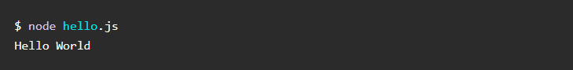
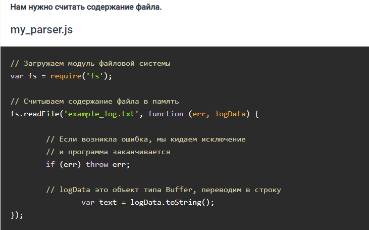
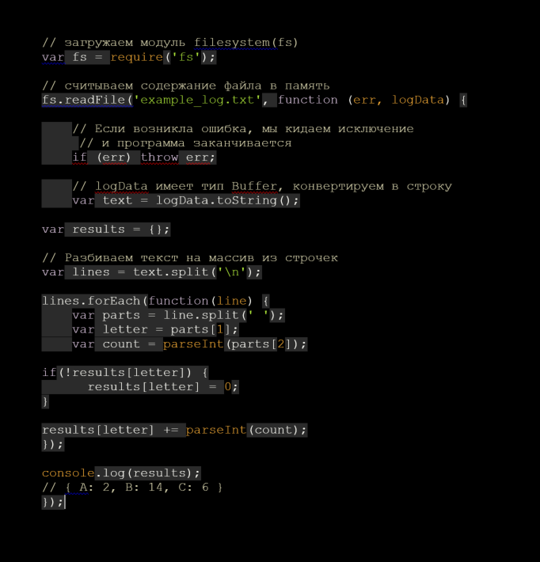

Устанавливаем Node
Node.js легко установить. Достаточно зайти на страницу загрузки официального сайта (https://nodejs.org/en/)
После установки у вас появилась новая команда в командной строке “node”. Вы можете использовать Node двумя способами.
Первый — без аргументов: данная команда откроет интерактивный режим в командной строке, где вы можете исполнять код JavaScript.$ node > console.log(‘Hello World’); Hello World undefined
В этом примере я просто набрала “console.log(‘Hello World’);” и нажал на Enter. Node начнет выполнять, и мы увидим наше сообщение. Также он напишет “undefined”, потому что печатает возвращаемое значение, и console.log не возвращает ничего. - Другой способ использования Node.js — это создание файла Javascript.
И сохраняем его в директорию, из которой будем запускать этот файл. Чтобы перейти достаточно в командной строке написать cd полное_название_директории
В данном случае мы переместили сообщение файла console.log и отправили этот файл команде node как аргумент. Node запускает код JavaScript в файле и распечатывает “Hello World”.
Файлы ввода/вывода с node.js
Запуск чистого JavaScript — это здорово, но не очень полезно. Поэтому в Node.js есть огромное количество библиотек (модулей) для того, чтобы делать реальные вещи. В данном примере мы откроем файл с записями и будем его обрабатывать.
Что означает этот файл, не так важно, но нужно знать, что каждая запись содержит дату, букву и значение. Мы хотим соотнести каждую букву с соответствующим значением.
К счастью, Node.js сильно облегчает обработку содержания файла с помощью встроенного модуля filesystem (fs). Модуль fs имеет функцию readFile, которая берёт путь к файлу и обратный вызов. Обратный вызов будет исполнен, когда файл будет полностью прочитан. Данные файла попадают в форме типа Buffer, что является набором битов. Мы можем конвертировать в строку с помощью функции toString()

Асинхронные вызовы в node.js
Как вы заметили в прошлом примере, для Node.js характерно использование асинхронных вызовов. По существу вы пишете, что нужно делать, и когда это будет сделано, будет вызван обратный вызов, потому что node.js однопоточен. Пока вы ждёте запуска обратного вызова, Node.js может уйти и делать другие вещи вместо блокировки до завершения запроса.
Это особенно важно для веб-серверов. Довольно характерно для современных веб-приложений иметь доступ к базам данных. Пока вы ждёте возвращения результата от базы данных, Node может обрабатывать больше запросов. Это позволяет справляться с тысячами параллельных запросов с маленькими накладными расходами по сравнению с созданием отдельного потока для каждого соединения.
Прошлый урок
Следующий урок